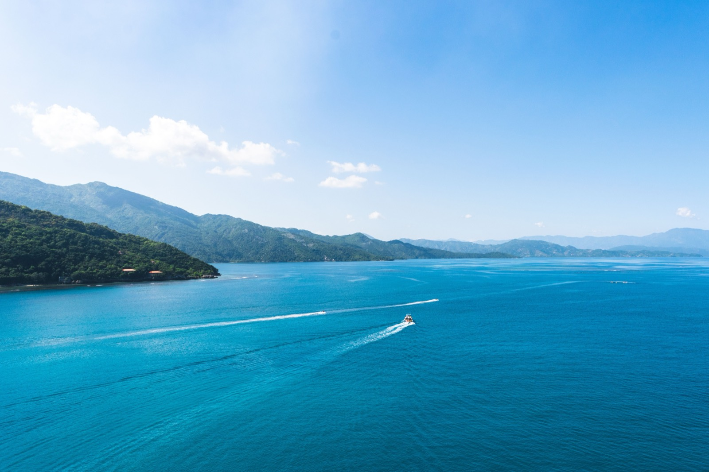

Moving to Haiti in 2026
The honest answer: 2026 is not a feasible or safe time to relocate to Haiti. Every major government warns 'Do Not Travel.' Here's the reality on the ground, and why — plus safer alternatives on the same island.

We'll be direct, because the situation demands it: 2026 is not a feasible or safe time to move to Haiti. The country is in near-total institutional collapse, and every major government — the US, UK, Canada, and Australia — maintains its strongest possible Level 4 'Do Not Travel' warning. This page exists to give you the honest reality rather than a how-to that doesn't apply.
The security reality
The crisis is severe and worsening. Armed gangs control an estimated 90% of the capital, Port-au-Prince; more than 1.4 million people have been displaced, and over 8,100 were killed between January and November 2025. Haiti has been under a national state of emergency since 2024, now extended beyond the capital into the Artibonite and Centre departments.
Why relocation isn't practical
- Foreigners are targets: kidnapping for ransom is a primary gang revenue source and affects all demographics, with ransom demands commonly $50,000–$200,000.
- No commercial flights: a US FAA notice prohibits US carrier flights to Port-au-Prince; land and sea borders with the Dominican Republic remain largely closed.
- No safety net: US consular capacity is extremely limited and the UK suspended consular services in 2025; no commercial insurance covers evacuation from Haiti, and medical evacuation is very expensive.
- Collapsed services: gang control of fuel terminals drives nationwide shortages hitting hospitals, schools, and essential services.
If you have an unavoidable reason to be there
For those with genuine, unavoidable ties (family, humanitarian work), official guidance is stark: work only through established organizations with their own robust security and evacuation infrastructure, keep a low profile, avoid displays of wealth, have an exit plan that doesn't depend on government help, and monitor official advisories closely, as conditions change rapidly. An international security mission has deployed but has not yet changed conditions on the ground.
Safer alternatives
If your goal is Caribbean relocation, the same island of Hispaniola offers the Dominican Republic — affordable, welcoming, and with an easy residency path. Jamaica and the wider region are covered across this guide. We'll revisit Haiti if and when conditions genuinely allow.
Relocating is step one. Owning the home is step two.
SORA designs and builds homes across the tropics — with our deepest roots in Panama and Costa Rica, where residency is straightforward and building costs a fraction of the coastal Caribbean. If your move is really about a place of your own in the sun, it is worth seeing what a fixed-price build looks like before you commit to any one island.
Frequently asked questions
Can you move to Haiti in 2026?
Realistically, no. Haiti is under a Level 4 'Do Not Travel' advisory from the US, UK, Canada, and Australia, with a national state of emergency in place since 2024. Armed gangs control most of the capital, foreigners are targeted for kidnapping, US commercial flights are suspended, borders are largely closed, consular services are limited, and no commercial insurance covers evacuation. It is not a feasible or safe time to relocate.
Why is Haiti so dangerous right now?
Haiti is in a severe security and humanitarian crisis: armed gangs control an estimated 90% of Port-au-Prince, over 1.4 million people are displaced, and thousands have been killed. State institutions have largely collapsed, fuel and services are disrupted, and kidnapping for ransom targets all demographics, including foreign nationals.
What's a safer alternative to Haiti in the Caribbean?
The Dominican Republic, which shares the island of Hispaniola with Haiti, is affordable, welcoming, and has an easy residency path — a far more practical Caribbean relocation. Jamaica and many other options are covered across our Caribbean Relocation Guide.
Sources & verification
Figures in this guide were checked against primary and authoritative sources on 27 July 2026. Immigration, tax, and cost figures change — always confirm the current rules with the official body or a licensed professional before acting.
- US State Department — Haiti — Level 4 'Do Not Travel' advisory
- US Embassy in Haiti — official security alerts
- Government of Canada — Haiti — travel advisory (Avoid all travel)